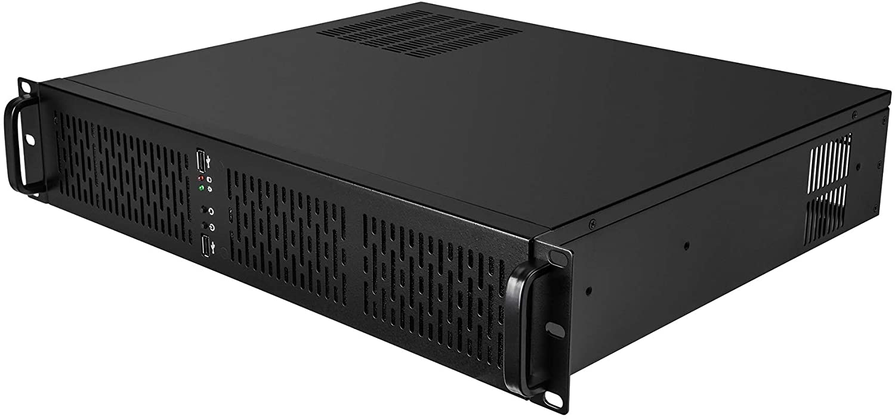
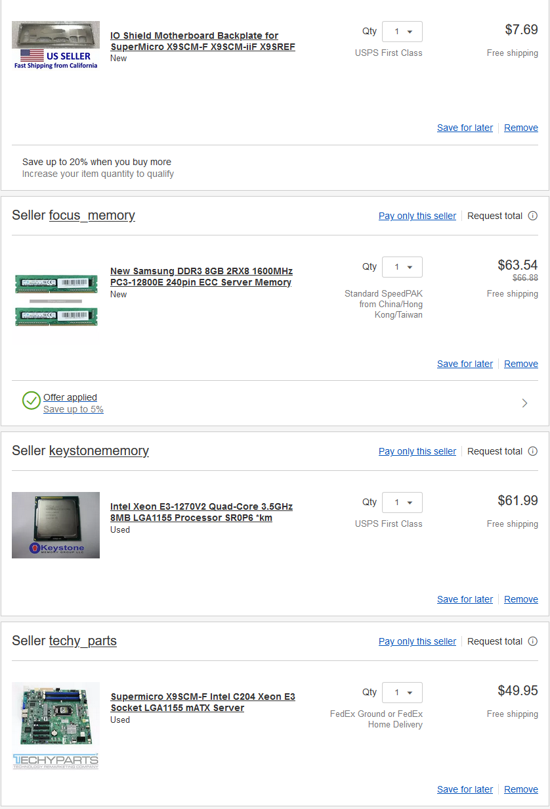

Personal NAS / Plex / E-book server - Part 1
Afternoon,
Today, I wanted to talk about a future plan I have going on right now. Recently, I had found a Dell R640 for VERY cheap, but my main issue is where the server rack is located, I can not have it running at certain times, as it is very very loud. I am currently in the process of moving this specific server to a place where noise wouldn’t be an issue. As a solution, I wanted to build a relatively cheap, quiet server for Plex, Audio, Ebook and NAS, as well as mess around with some other self hosted programs.
Case - Rosewill RSV-2600
The Rosewill RSV-2600 seemed pretty adequate for the job here. I wanted something relatively small height wise, but still have a decent amount off storage options, and thats when I came across this case. At $99.99, it seemed like a no brainer here. The only downside i’ve heard is that the triple fans included can be a bit loud, but I intend to replace these.

Motherboard, CPU and RAM
For this section, I primarily followed this guide on selecting these specific parts. That guide already has an incredible amount of information on what to grab, so I will just briefly go over my choices.
CPU
I have decided to go with the Intel Xeon E3-1270V2. A little bit of an older CPU, being released in 2012, but for my application, this should suffice. It has 4 cores, 8 threads, so enough to run enough a few docker containers with no issue.
CPU Cooler
For this, I have chosen the Noctua NH-L9x65 Low profile CPU cooler. I am a huge Noctua fanboy, and my current workstation has 2 of their AF12 fans. For how ugly they truly are, they offer some of the best and most silent performance. I have used the slightly smaller version of this cooler, the NH-L9i, and had no complaints. I believe this should handle the processor at load no problem, and still fit in the case with enough clearance to actually close it. At $50.00, it was a no brainer for me personally.
RAM and Motherboard
For the RAM and motherboard, I have chosen a Samsung DDR3 ECC 16 GB kit (Nothing special there), and a Supermicro X9SCM-F mATX motherboard. The motherboard I specifically chose felt it had enough enterprise level features available, as well as enough SATA ports if I would like to populate this entire server. There is probably more I am missing, and thats alright, I’ll trust the guide I linked above enough.
Power Supply
For the power supply, I am just going to pick up a 500W EVGA Bronze power supply. I’ve used them in the past with no issue, and should just work. Nothing really special here.
Storage
For storage, I am going to be using just some spare drives around. I have a 6TB WD Black I got from a bundle deal on a processor, and a 1TB SSD for boot. Again, nothing special at all.

Conclusion
As you can see, this is part one of this “series”. I am waiting for a little bit more funding to actually start this project up, I just wanted to have my parts layed out clear to keep track of this machine. As a conclusion, I will share a few of my self hosted projects I would like to try.
Snapdrop - Self hosted local file sharing, looked pretty interesting.
Mango - Self hosted manga web reader.
Owncast - Personal live streaming.
Homer - Static Homepage for self hosting.
Funkwhale - Audio streaming service from local files.
– Doggobot